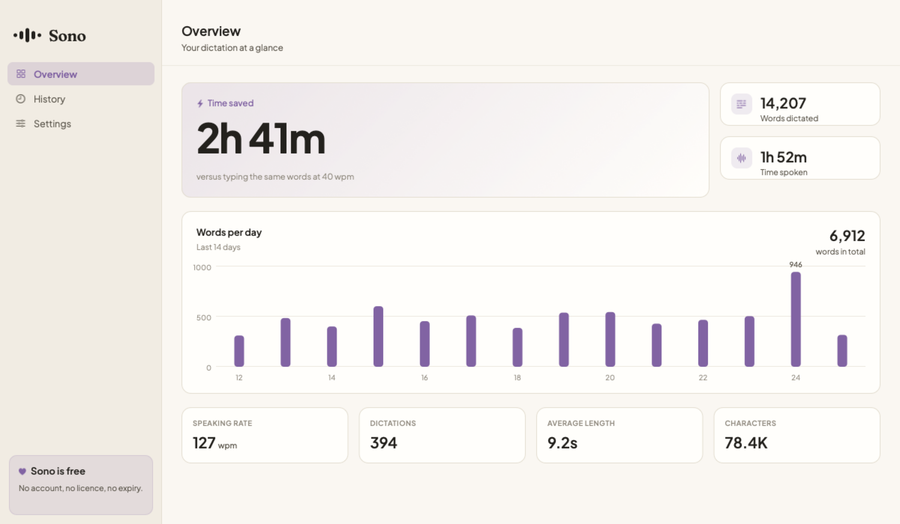

01
Parakeet hears you
NVIDIA Parakeet TDT 0.6B v3, among the strongest open speech models for English, running locally through sherpa-onnx. It downloads once and then works with your wifi off.
Dictation for macOS
Hold a key, say what you mean, and finished text lands in whatever app you are using. The speech model runs on your Mac. Not in a datacentre, not on our servers, because we do not have any.
What makes it different
People do not speak in clean sentences. They stumble, double back, and change their mind halfway through. Sono reads past all of that on device, and writes down the version you meant.
Listening
0:00
The engine
Speech becomes text with NVIDIA Parakeet. Then Apple Intelligence, the model already built into macOS, reads that text and writes down what you meant. Neither one sends a word anywhere.
01
NVIDIA Parakeet TDT 0.6B v3, among the strongest open speech models for English, running locally through sherpa-onnx. It downloads once and then works with your wifi off.
02
The same on-device foundation model macOS ships with. It strips fillers, resolves the sentence you corrected mid-flow, fixes the grammar you spoke past, and turns things you counted out loud into a real list.
Enhancement starts switched off. Raw transcription is instant, and the editing pass adds a moment, so the first run is as fast as it can be. Turn it on in Settings the moment you want the version you meant instead of the version you said. It costs nothing and it needs no account, because it is already on your Mac.
Privacy
Not a policy. An architecture. There is no server to send your voice to, no account to make, and no analytics in the app.
Recording, transcription and clean up all happen on your Mac, using NVIDIA Parakeet and Apple Intelligence. Turn off your wifi and Sono still works.
No email, no password, no profile, and nothing to activate. You download the app and use it. That is the whole relationship.
Plain text on your disk that you can read, move or delete. Put it in iCloud Drive if you want it on two Macs. We never see it.
One button removes the model, the history and every preference. Most Mac apps leave hundreds of megabytes behind. Sono does not.
A look inside
Every dictation is logged locally, so Sono can tell you how much typing you have skipped. Six accent themes, light and dark.

Mail, Slack, Xcode, a terminal, a browser field. If you can type there, you can talk there.
Tap ⌥ for hands free dictation. Hold it for push to talk when you only need a line.
"Tuesday, no not Tuesday, Thursday" comes out as Thursday. Only the version you meant.
Count things out loud and they arrive as a numbered list, not a run on sentence.
The ums and uhs and stutters never make it to the page.
Free, with no account and no expiry. Install it on every Mac you own.
Get it
Sono costs you nothing because it costs us nothing to run. There is no server, no account and no analytics in the app, so there is nothing to bill for and nobody to bill. Download it and it is yours.
macOS 26 or later, Apple silicon. Fetches its speech model on first launch, once.
Questions
Yes. Sono downloads its speech model once, then transcribes with no network at all. It reaches the internet for exactly one thing: a daily look for a new version, which you can turn off, and which carries nothing about your text.
It runs NVIDIA Parakeet TDT 0.6B v3, currently among the strongest open speech models for English, then Apple Intelligence tidies the result. Accuracy is comparable to the cloud services, without the cloud.
Pasting into other apps needs Accessibility access, which App Store rules do not permit. Sono is signed and notarised by Apple, so macOS trusts it, and it updates itself.
Nothing. There is no paid tier, no trial limit and no account. Sono runs entirely on your Mac, so it costs us nothing to run and there is nothing for us to charge you for.
We cannot. They are a file on your disk. There is no server, no bucket and no database on our side.